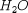
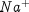
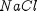
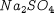
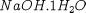
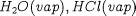
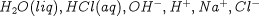
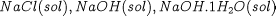

An electrolytic material may involve several different classes of species, including:
molecular species (e.g. , , )
ionic species (e.g. , , , )
solid components (e.g. , )
hydrates (e.g. )
In general, the above species may occur in a number of thermodynamic phases. The electrolytic physical property interface assumes that the following phases may appear in a system:
a single vapour phase comprising a mixture of molecular species;
a single liquid phase comprising a mixture of molecular species and ions;
one or more solid phases, each comprising a single solid component or hydrate.
The interface makes the following additional assumptions:
All species that exist in the vapour phase will also exist in the liquid phase.
Species in the solid phase(s) do not exist in either the vapour or liquid phases.
If the same chemical component exists in both solid and liquid phases, it will be modelled as two different species.
The species are ordered as follows:
species that occur in both vapour and liquid phases, followed by,
species that occur in the liquid phase only, followed by,
species that occur in the solid phase only.
As an example, the following species may be present in a system comprising sodium chloride and water:
Vapour: 
Liquid: 
Solid: 
Note that the solid species include hydrates and precipitates.